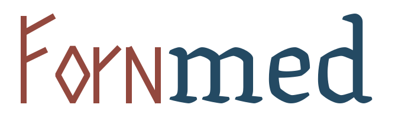
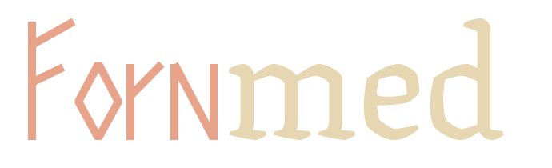

En citerbar passage
“Här visas originaltexten tillsammans med adressen till den utgåva där passagen kan kontrolleras.”
Bedömning: ogranskadVisa källa och proveniens
Källor · passager · bedömningar
En visuell identitet för en källkritisk väg genom Sveriges och Nordens forntid och medeltid.

Ristad stenManuskriptModern läsbarhet
01 / Ordmärke
”Forn” tecknas med få raka streck efter runraderna. ”med” har mjukare blackletterformer från Texturina. Båda leden står på samma baslinje och har samma visuella höjd. Kurvorna ligger direkt i SVG-filen, så logotypen fungerar utan webbfont.

Alternativ · mörk bakgrundMinsta rekommenderade bredd: 220 px. Ge märket fri yta och behåll originalets proportioner. Enfärgad SVG finns för tryck och särskilda sammanhang.
02 / Palett
Bakgrunden är varm och ljus. Bläckblått ger struktur åt länkar och rubriker; runrött markerar identiteten. Guld och grönt används sparsamt.
Bläck mot pergament: 12,89:1. Runrött: 5,81:1. Manuskriptblått: 8,41:1. Färgerna fungerar som vanliga sRGB-hexvärden i CSS.
03 / Typografi
Två fritt licensierade och lokalt hostade typsnitt räcker för hela webbplatsen. Det medeltidsinspirerade uttrycket stannar i logotypen.
Gränssnitt / Source Sans 3
Navigation, formulär, metadata och tydliga bedömningsetiketter.
Läsning / EB Garamond
Längre källtext, redaktionella ingresser och större rubriker.
Filerna finns i fonts/ och laddas genom profil.css. Inga externa fonttjänster, skript eller kakor krävs.
04 / Tillämpning
Den historiska känslan är en ram. I själva arbetsflödet ska användaren snabbt se verk, passage, licens, datering och om en bedömning är granskad.
“Här visas originaltexten tillsammans med adressen till den utgåva där passagen kan kontrolleras.”
05 / Leverans
Alla visuella resurser i denna manual är lokala. WOFF2-filerna och deras SIL OFL-licenser medföljer.
fonts/, licenser/